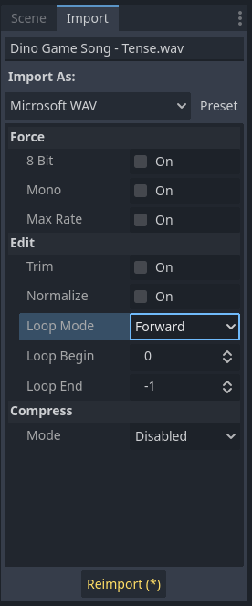
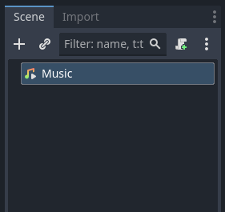
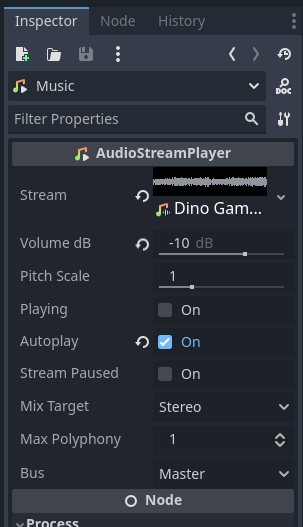
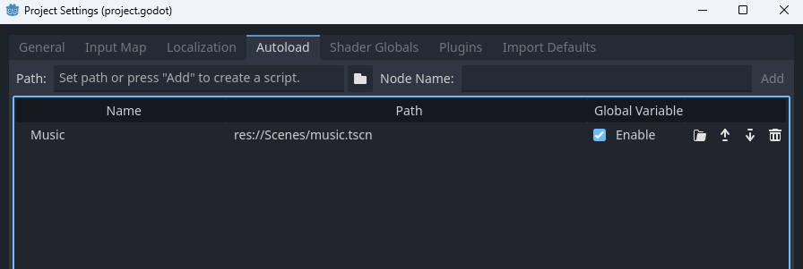

A near universal in games, music is an excellent tool in setting ambience and getting the player pumped. On this page we will learn how to import song loops and set up a global music player.
Our very first step is choosing which song (or songs) we wish to use. You can find a couple options for songs in the music folder of your VGDC-2024 Assets folder.
If you are not taking this course in person, you can download the assets Here
Go ahead an give them a listen. When you decide which one to add, drag it into your file system (I would recommend creating a new audio folder if you have not already.) Once it is imported, select the song in the file system, then in the scene tree select the import tab. In it we can choose some special options for the song. In our case we will want to set it's loop mode property to Forward (this sets it to loop back to the beginning when it ends.) Then press Reimport.
Of course, just having the sound file in the file system doesn't add it to the game. In order to actually hear it we need to create a new scene. For it's root node create a new AudioStreamPlayer and rename it to Music.
Next select the Music node. In the inspector you will see a property called stream. Drag and drop your song from the file system to the stream property. In addition, you can change the volume (I set mine to -10db or decibels lower) and set autoplay to true.
Go ahead and save the music scene.
Our final step is to set the music scene to autoload so that it is not cut off by level transitions nor pausing the scene tree. We can do this by navigating to your project settings, selecting the autoload tab and pressing the file icon to find the music scene. Press add and it will be automatically loaded when the game runs.
And your done! Go ahead and test out the music, then move onto another module!